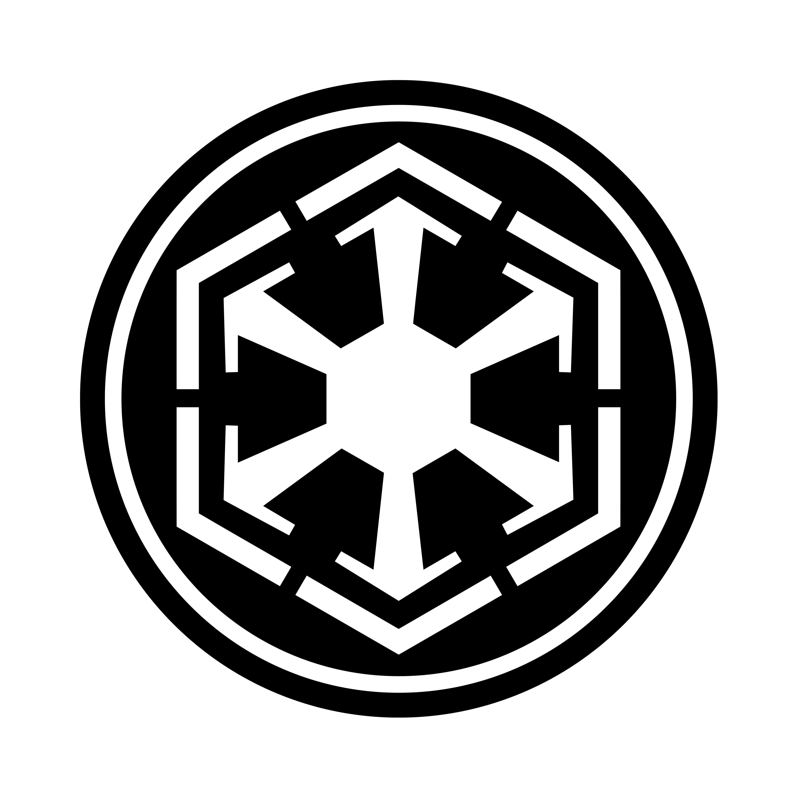

Leyendas de la Galaxia
Los Caballeros Jedi
Los Jedi son los guardianes de la paz y la justicia en la República Galáctica. Usan el lado luminoso de la Fuerza para obtener conocimiento y defensa, nunca para atacar. Figuras como Yoda y Luke Skywalker son ejemplos clave.
Su arma característica es el sable de luz, y su filosofía se centra en el desapego, la calma y la armonía con todos los seres vivos. A lo largo de la historia, han sido perseguidos casi hasta la extinción, pero siempre resurgen.

Los Lores Sith
Los Sith son la antítesis de los Jedi. Utilizan el lado oscuro de la Fuerza, alimentándose de emociones como el miedo, la ira y el odio para obtener poder absoluto. Darth Vader y el Emperador Palpatine son los máximos exponentes de esta orden.
La Regla de Dos establece que solo puede haber dos Sith al mismo tiempo: un maestro que encarna el poder y un aprendiz que lo codicia. Su objetivo final es el dominio total de la galaxia y la erradicación de los Jedi.
¿Quieres unirte a ellos? Ve al formulario de reclutamiento.